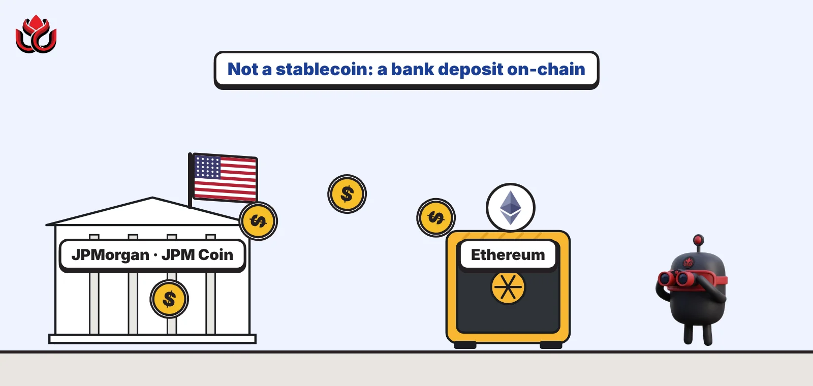
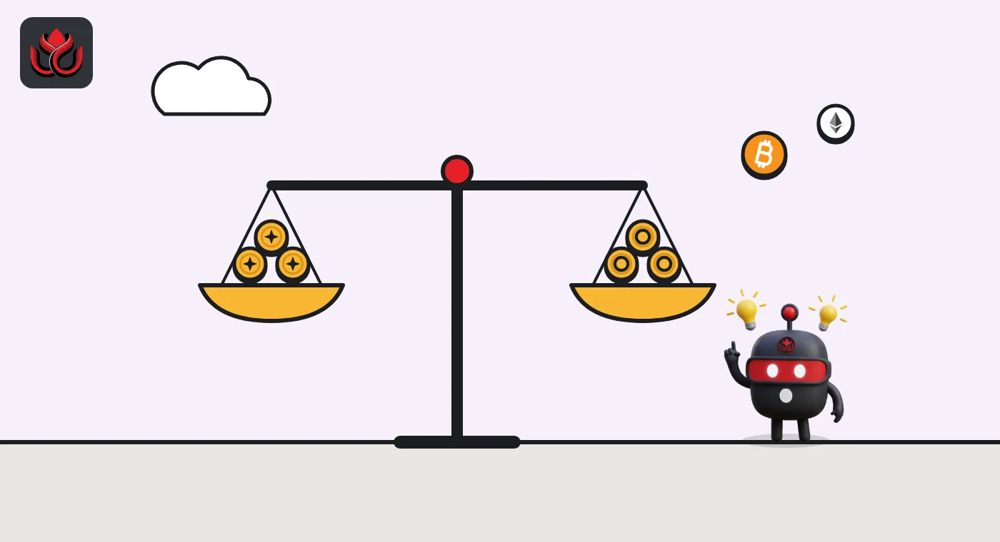
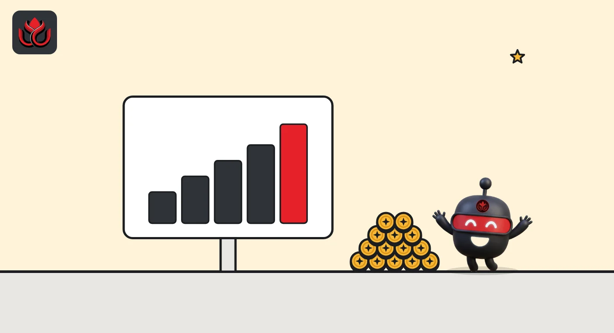

JPMorgan puts JPM Coin on Ethereum: a bank deposit on a public chain, not a stablecoin
JPMorgan's dollar deposit token is now live on Ethereum for institutional clients, 11 months after starting on Base. Its Kinexys unit already moves about $7 billion a day, and banks and stablecoins are now chasing the same job.

Key points
- On October 19, 2026, JPMorgan's Kinexys unit made JPM Coin (JPMD) live on Ethereum for institutional clients, after first launching it on Base.
- JPMD is a bank deposit recorded on a blockchain, not a stablecoin backed by reserves, which is why only vetted institutions can use it.
- Kinexys says it has processed over $4 trillion in total and now averages about $7 billion a day, up from $5 billion a day in April.
What JPMorgan launched
JPMorgan's blockchain unit, Kinexys, said on Monday, October 19, 2026, that JPM Coin, ticker JPMD, is now available on Ethereum for the bank's institutional clients, according to the Kinexys announcement.
JPMD is a deposit token: a digital version of dollars held as ordinary deposits at JPMorgan, placed on a public blockchain so clients can pay each other on-chain around the clock. It was issued first on Base, Coinbase's Ethereum layer-2 network. With the Ethereum launch, it supports peer-to-peer transfers between institutional clients across the EVM ecosystem, including Base and Ethereum mainnet.
Kinexys said Ethereum was the natural next chain because of its established on-chain liquidity and tokenized assets. It added that institutions active in crypto and real-world asset deals want on-chain cash from established banks. Emma Landriault, global head of Kinexys Labs, said "Tokenized financial infrastructure is no longer theoretical."
Deposit token or stablecoin: the difference
Both put dollars on a blockchain, but they are different things. A stablecoin such as USDC is issued by a company that holds reserves, usually Treasury bills and cash, and the token is a claim on that issuer. A deposit token is the bank deposit itself, recorded on a blockchain. It sits inside the bank's regulated balance sheet, which is why JPMorgan limits it to vetted institutional clients.
JPMorgan's Kinexys JPM Coin page carries the product details and FAQ. The announcement also mentions programmable treasury management from client wallet interfaces.
Some details remain thin. The announcement did not give an exact go-live time on Ethereum, the number of clients using JPMD or how many tokens are in circulation. It did include support from outside the bank: Matthew Dawson, co-founder of the industry group Ethereum Institutional, called the move a sign that institutional finance is shifting onto public, verifiable infrastructure.

JPMorgan's growing on-chain footprint
JPM Coin is one of several JPMorgan products now on public chains. Kinexys said J.P. Morgan Asset Management launched tokenized money market funds on Ethereum earlier this year.
Public data shows these are not small experiments. On the rwa.xyz tokenized Treasury dashboard, the JPMorgan OnChain Liquidity-Token Money Market Fund (JLTXX) had a total value of about $792 million on November 1, 2026. That made it the sixth-largest tokenized Treasury product, just ahead of WisdomTree's WTGXX fund.
Tokenized money market funds from big asset managers, November 1, 2026
US$ billion
How big Kinexys already is
Kinexys gave two figures for its overall business. It says it has processed more than $4 trillion in cumulative transactions and now averages about $7 billion a day, based on its internal data. Those numbers cover all Kinexys services, not JPMD on public chains alone.
That is fast growth. In an April 2026 update, Kinexys put cumulative volume at more than $3 trillion since its start in 2015 and daily volume at more than $5 billion. That is roughly $1 trillion and $2 billion a day added in about six months.

SoFi's consumer version, three days later
JPMorgan's move came in a busy week for bank tokens. On October 22, SoFi launched SoFi Earn (SOFIE), which it calls the first national bank-issued tokenized deposit for consumers, SoFi said. Each SOFIE represents $1 on deposit at SoFi Bank, pays a variable 4.40% annual yield, is eligible for FDIC insurance up to the usual limits and converts one-for-one into SoFiUSD, the bank's own stablecoin. It is rolling out to SoFi Crypto members through November.
The contrast shows two paths for the same idea. JPMorgan keeps its token inside a closed group of institutional clients and uses it for business payments. SoFi offers its version to ordinary app users as a savings product with a bridge into crypto.
Both are still small next to stablecoins. On November 1, rwa.xyz tracked $286.24 billion of stablecoins in total, led by Tether's USDT at about $178.6 billion and Circle's USDC at about $70.9 billion. Bank deposit tokens do not yet publish comparable on-chain totals.
Timeline
JPM Coin launch announced; issued first on Base
Kinexys reports over $3 trillion cumulative and $5 billion a day
JPMD goes live on Ethereum for institutional clients
Kinexys reports over $4 trillion cumulative and $7 billion a day
SoFi launches SOFIE, a tokenized deposit for consumers
JLTXX at about $792 million on rwa.xyz
LC Insight analysis
This section is our reading of the facts above, not a statement of fact.
- We think Ethereum mainnet was chosen because that is where the collateral lives. Tokenized funds such as BUIDL and JPMorgan's own JLTXX already sit there, so a bank token on the same chain makes paying for them and settling against them simpler.
- Bank deposit tokens and stablecoins are now fighting for the same job: moving dollars on-chain between institutions. Our bet is on a split, with banks keeping regulated institutional flows and stablecoins winning open, retail and cross-border use.
- JPMD stays permissioned, so its on-chain volume may look tiny next to Kinexys' $7 billion a day. The real test is whether other banks and DeFi-style tools can plug into it.
What's next
- Whether JPMD expands to non-EVM chains such as Solana
- Whether other large banks bring deposit tokens to public chains
- Use of JPMD to settle tokenized fund subscriptions and redemptions
- Any disclosure of JPMD's on-chain supply
Disclaimer. This article is based on public information and the sources listed below as of the update time shown. It is for information only and is not investment, legal or tax advice. Figures may change as companies and authorities publish new data.
Sources
- J.P. Morgan Payments, Kinexys Brings JPM Coin Deposit Token to Ethereum (October 19, 2026)
- J.P. Morgan Kinexys, JPM Coin product page and FAQ
- J.P. Morgan Payments, Kinexys 2026 Milestones (April 28, 2026)
- rwa.xyz, Tokenized U.S. Treasury Funds dashboard (data as of November 1, 2026)
- SoFi, SoFi Launches SoFi Earn (SOFIE) (October 22, 2026)
- rwa.xyz, RWA and stablecoin overview (November 1, 2026)